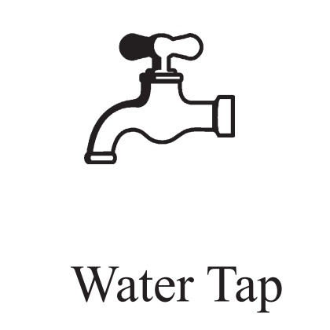
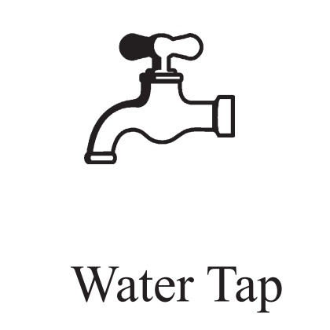

Religion: Likely Buddhist (based on cultural background)
Ethnicity: Sinhala
Education: Information not publicly available
Profession: Politician, Public Servant
Political Status: Presidential Candidate
Residency: Information not publicly available
Candidate Profile and Background
Affiliation: Represents the Arunalu People's Front in the 2024 Sri Lankan Presidential Election.
Focus: Emphasizes regional and local issues with a platform centered on grassroots development.
Candidate’s Policy Platform and Vision
Economic Policies: Focus on local and regional economic development, supporting small businesses, agriculture, and rural development. Includes improving infrastructure, providing incentives for local entrepreneurs, and enhancing financial services for underserved communities.
Social Policies: Emphasis on improving living conditions in rural and marginalized areas, with proposals to enhance healthcare, education, and social services.
Foreign Policy: Focus on strengthening relationships with neighboring countries and promoting regional cooperation, with policies supporting local trade and cultural exchanges.
Environmental Policy: Supports sustainable development, conservation efforts, and eco-friendly practices to address local environmental challenges.
Track Record and Experience
Previous Positions Held: Roles within the Arunalu People's Front involving local and regional political leadership.
Accomplishments: Contributions to local development projects, community initiatives, and efforts to improve infrastructure and support local businesses.
Values and Integrity
Ethical Standards: Emphasizes integrity, transparency, and a commitment to local issues with a focus on ethical governance and community service.
Consistency in Principles: Advocates for local development and grassroots issues in alignment with the Arunalu People's Front’s core values.
Public Image and Communication Skills
Public Engagement: Focuses on connecting with local communities, addressing concerns through community meetings, local events, and media interactions.
Leadership Qualities: Demonstrates a strong connection to local issues, the ability to mobilize community support, and a focus on practical regional solutions.
Party Affiliation and Support Network
Political Party: Represents the Arunalu People's Front, committed to regional and local issues.
Coalition and Alliances: Includes alliances with other regional or local groups, supported by community leaders, local activists, and regional organizations.
Public Opinion and Endorsements
Polls and Public Sentiment: Public opinion will reflect his appeal to voters prioritizing grassroots and community-focused policies.
Endorsements: May come from local leaders, community organizations, and regional activists who support his platform.
Debates and Interviews
Participation: Focuses on local and regional development, highlighting his commitment to grassroots issues and contrasting his vision with other candidates.
Election Symbol - Water Tap
Symbolism: Represents access to essential services, community well-being, and the importance of addressing basic needs. Reflects his focus on improving local infrastructure and services.
Challenges and Opportunities
Feasibility of Promises: Dependent on his ability to implement local development projects and address community needs effectively.
Potential Obstacles: Limited national visibility, challenges in mobilizing broad-based support, and addressing diverse regional issues.
Personal Vision and Values
Vision: Improving local and regional conditions through practical, community-focused solutions.
Values: Commitment to addressing grassroots issues, ethical leadership, and community service.
Conclusion
Summary: K. R. Kishan offers a community-oriented alternative in the 2024 Sri Lankan Presidential Election with a focus on local development and grassroots issues.

 
